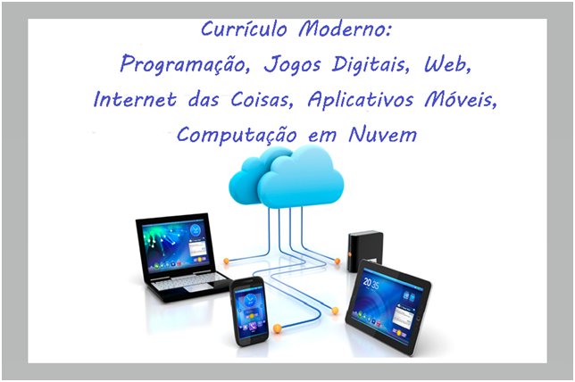

O Técnico em Informática desenvolve programas para computadores e quaisquer outros dispositivos computacionais como, por exemplo, aparelhos celulares, tablets e robôs, visando a automação de todos os processos relativos às Tecnologias de Informação e Comunicação (TIC), ou seja, seu trabalho envolve a produção de software e sua integração com processos administrativos, comerciais, médico-hospitalares, industriais, de serviços, de telecomunicações e de teleprocessamento. O Técnico em Informática formado pelo COTUCA, portanto, atuará principalmente como programador de sistemas computacionais, para as mais diversas plataformas. Além desse perfil básico, o Técnico em Informática formado pelo COTUCA será também preparado para atuar com as novas tendências da área de Tecnologias de Informação e Comunicação, como desenvolvimento de soluções usando Internet das Coisas, Computação em Nuvem, Sistemas Distribuídos, Jogos Digitais, Inteligência Artificial e Aprendizagem de Máquina. Desenvolverá competências que permitam desenvolver sistemas que integrem diversas plataformas de software e hardware e, assim, possam alavancar os objetivos almejados pela nova visão da Indústria 4.0. Usando as várias plataformas de computação de maneira integrada, concebe, projeta, escreve e atualiza programas e sistemas, aplicando métodos ágeis de análise, projeto e programação, modelagem e acesso a bancos de dados, redes, técnicas de design para web, técnicas de projeto de sites na Internet, desenvolvimento de aplicações distribuídas na Nuvem e para dispositivos móveis, desenvolvimento de jogos digitais, desenvolvimento de aplicações da Internet das Coisas (IoT) e automação de dispositivos controlados por equipamentos de computação, dentre outras aplicações das TIC. Usando as várias plataformas de computação de maneira integrada, concebe, projeta, escreve e atualiza programas e sistemas, aplicando métodos ágeis de análise, projeto e programação, modelagem e acesso a bancos de dados, redes, técnicas de design para web, técnicas de projeto de Sites na Internet, desenvolvimento de aplicações distribuídas e para dispositivos móveis, desenvolvimento de aplicações da Internet das Coisas (IoT) e Indústria 4.0, dentre outras aplicações das TIC.
